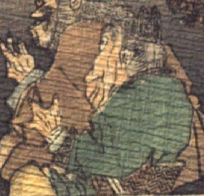

老人のような鬼。黒い頭巾状のものをかぶっている。頭巾の上部は2つに割れて尖っており、角のようにもみえる。眉毛が濃く、目玉は丸い。あごの肉がたるんで、皺が寄っている。緑色の衣服を着て、座っている。
著作者：J.Dautremer／出典：親書誌：U426_nichibunken_0123：Le vieillard et les démons／日付：2006／資源識別子：U426_nichibunken_0123_0004_0008
Copyright (c)2010- International Research Center for Japanese Studies, Kyoto, Japan. All rights reserved.